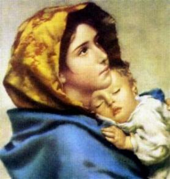
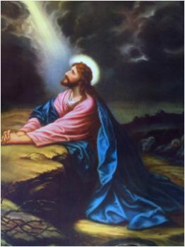

ORAÇÃO COMPLETA
ALGUNS TESTEMUNHOS

Evidentemente, não temos meios para expressar o quanto NOSSA SENHORA estima o SANTO ROSÁRIO acima das outras Devoções. Mas por certo, pela narrativa de uma quantidade impressionante de acontecimentos ocorridos, não é difícil perceber o quanto a SANTÍSSIMA VIRGEM MARIA é magnânima ao recompensar aqueles que trabalham para pregá-lo, para estabelecê-lo e cultivá-lo fervorosamente; e, por outro lado, o quanto ELA é terrível contra aqueles que querem colocar obstáculos contra ele.
São Domingos de Gusmão ao longo da sua existência louvava e amava verdadeiramente a SANTÍSSIMA VIRGEM MARIA. Ele pregava as grandezas da MÃE DE DEUS e animava as pessoas a honrá-la através da recitação do SANTO ROSÁRIO; preocupava-se em afirmar, que além de MÃE DO SENHOR, ELA também nos foi dada por MÃE nos últimos momentos de vida do seu FILHO JESUS na Cruz; e como Nossa MÃE, a SANTÍSSIMA VIRGEM MARIA ajuda a todos que a amam e que necessitam da sua tão querida e eficaz intercessão junto a DEUS.
Também o bem-aventurado Alano de La Roche, que foi o reparador e estimulador da Devoção, em vários momentos da sua vida, NOSSA SENHORA o honrou com muitas visitas, para instruí-lo sobre os melhores meios de obter a salvação, de se tornar um bom Sacerdote, um perfeito religioso e um verdadeiro imitador do Seu FILHO JESUS.
Durante as horríveis tentações e perseguições dos demônios que queriam matá-lo, e o reduziram a uma extrema tristeza, bem próximo da desesperança, a SANTÍSSIMA VIRGEM MARIA lhe apareceu e o consolou, dissipando todas aquelas terríveis nuvens de trevas. E assim com plena disposição Alano continuou o seu trabalho. Depois de ter atraído mais de cem mil pessoas à CONFRARIA DO SANTO ROSÁRIO e de ter estimulado definitivamente o cultivo da Oração, morreu em Zwolle, em Flandres, na França, no dia 8 de Setembro de 1475.
Satanás e seus asseclas tinham uma imensa inveja dos notáveis e admiráveis frutos que o SANTO ROSÁRIO proporcionava. Padre Tomás de São João que era um famoso pregador, se dedicou inteiramente a divulgação e propagação do ROSÁRIO, e por isso mesmo, passou a sofrer uma cruel perseguição diabólica. Tantos foram os maus tratos, que o demônio o reduziu a uma longa e perigosa doença, sendo inclusive desenganado pelos médicos. Certa noite, quando acreditava ter chegado a sua última hora, satanás lhe apareceu de forma assustadora; Padre Tomás elevou os olhos a uma imagem de NOSSA SENHORA que estava próxima a sua cama e com todas as forças gritou: "MÃE dulcíssima, ajude-me!" Mal terminou as palavras, NOSSA SENHORA na imagem, lhe estendeu a mão, apertando-lhe o braço, e lhe disse: "Não temas, meu filho Tomás, eis que estou aqui em teu socorro; levanta-te e continues a pregar a Devoção ao Meu ROSÁRIO. Defender-te-ei contra todos os inimigos". O demônio sem perda de tempo fugiu apavorado. Padre Tomás se levantou em perfeita saúde, agradeceu a boa MÃE com os olhos inundados de lágrimas e continuou a pregar o SANTO ROSÁRIO com um sucesso admirável.
UMA ORAÇÃO FORTE
Sobre as Orações, o ROSÁRIO contém o "CREDO" que rezamos na Cruz do TERÇO e ou do ROSÁRIO, sendo um precioso resumo das verdades cristãs, é uma oração especial e de grande valor, porque contém a "Fé" na sua base, e a "Fé" é o fundamento de todas as virtudes e orações a DEUS. Na Oração, logo no começo ela manifesta as Três Virtudes Teologais: "Fé, Esperança e Caridade". O cristão ao proclamar "CREIO EM DEUS..." revela uma maravilhosa virtude, que é eficaz para santificação da alma e afugentar satanás para bem longe. Como testemunho é bom lembrar: a Oração do "CREDO" foi utilizada por muitos Santos para se proteger das tentações, e ajudá-los preponderantemente no caminho da santificação.
A ORAÇÃO DOMINICAL
O PAI NOSSO foi criado por NOSSO SENHOR JESUS, o Rei dos Anjos e Rei de toda humanidade. A sabedoria do Mestre Divino se mostra evidente e luminosa, na ordem, na suavidade, na beleza, na força e na clareza dessa admirável Oração Divina; ela é pequena, porém grande e magnífica em instrução, pois é inteligível e perfeita para os simples, e cheia de mistérios para os sábios. Ela solicita tudo o que nos é necessário; ela louva a DEUS de um modo excelente e especial; ela eleva e conduz a nossa alma para junto do SENHOR DEUS DA VIDA. Por isso mesmo, devemos recitar a Oração do PAI NOSSO com a certeza de que o PAI ETERNO atenderá, considerando que ela é uma Oração feita pelo Seu FILHO JESUS, a Quem ELE sempre atende com prazer em todas as ocasiões.
Santo Agostinho de Hipona assegura que a Oração do PAI NOSSO recitado corretamente, meditando fervorosamente nas palavras, as graças que emanam apagam os pecados veniais. Como a humanidade é frágil e sujeita a várias misérias, significa dizer, que a Oração de JESUS concede um socorro mais imediato ao ser recitado com mais frequência e devoção.
"PAI NOSSO QUE ESTAIS NO CÉU, SANTIFICADO SEJA O VOSSO NOME, VENHA A NÓS O VOSSO REINO, SEJA FEITA A VOSSA VONTADE, AQUI NA TERRA COMO NO CÉU. O PÃO NOSSO DE CADA DIA NOS DAÍ HOJE, PERDOAI AS NOSSAS OFENSAS, ASSIM COMO NÓS PERDOAMOS A QUEM NOS TEM OFENDIDO. E NÃO NOS DEIXEI CAIR EM TENTAÇÃO, MAS LIVRAI-NOS DO MAL. AMÉM".
A ORAÇÃO AVE MARIA
A Saudação Angélica resume de forma concisa a teologia sobre NOSSA SENHORA. Na primeira parte a SANTÍSSIMA TRINDADE revela Suas Virtudes, Sua Missão Materna e Suas Prerrogativas Especiais; na segunda parte, sua prima Santa Isabel, iluminada pelo ESPÍRITO SANTO, insere as palavras que dão vida a oração; e por fim, a Igreja, no Concílio de Éfeso, no ano 430, condenou o erro herético de Nestório, e define NOSSA SENHORA como verdadeira MÃE DE DEUS. Na oração vamos encontrar o "louvor" Divino e a "súplica" humana. O "louvor" contém as palavras que revelam a imensa grandeza da SANTÍSSIMA VIRGEM MARIA; a "súplica" contém o pedido humano, um pedido amplo, de tudo o que necessitamos e pedimos a DEUS e a SANTÍSSIMA VIRGEM MARIA, até o final da nossa existência.
"AVE MARIA, CHEIA DE GRAÇAS, O SENHOR É CONVOSCO; BENDITA SOIS VÓS ENTRE AS MULHERES, E BENDITO É O FRUTO DO VOSSO VENTRE JESUS. SANTA MARIA, MÃE DE DEUS, ROGAI POR NÓS PECADORES, AGORA E NA HORA DA NOSSA MORTE. AMÉM."
EXALTAÇÃO NECESSÁRIA
A saudação contida na Oração foi pronunciada pelo ARCANJO SÃO GABRIEL, e foi sem dúvida, o acordo mais importante do mundo e em benefício de todas as gerações, porque anuncia a Encarnação do VERBO ETERNO, a Paz entre DEUS e toda humanidade, e a Redenção do gênero humano. Assim, a Oração da AVE MARIA é o Cântico Novo da Lei da Graça, a Alegria dos ANJOS e da humanidade, o terror e a confusão dos demônios.
Há um Cântico Antigo e um Cântico Novo. O Antigo é aquele que os Israelitas cantaram em reconhecimento da Criação, da Conservação e da Libertação do seu cativeiro, da Passagem no oceano, na fuga pelo mar Vermelho, do Maná do Céu, e de todos os demais favores Divinos. O Cântico Novo é aquele que os cristãos cantam em Ações de Graças pela Encarnação do VERBO DE DEUS e a Redenção da humanidade. Como esses prodígios aconteceram através de anúncios pela Saudação Angélica, agradecemos penhoradamente a SANTÍSSIMA TRINDADE pela providência e por todos os maravilhosos e preciosos benefícios realizados. Louvamos a DEUS PAI, que tanto amou o mundo que nos enviou JESUS, o Seu Único FILHO, para Salvar a humanidade de todas as gerações. Bendizemos e agradecemos ao FILHO, que se fez Homem para nos Redimir e Salvar, além de deixar os Seus ensinamentos e meios eficazes através de Sete Admiráveis Sacramentos, para alcançarmos a eternidade. Agradecemos também ao DIVINO ESPÍRITO SANTO, que formou o Corpo Puríssimo de JESUS, FILHO DE DEUS, no seio santíssimo da VIRGEM MARIA, para que ELE fosse a Vítima Perfeita que assumiu os nossos pecados, e que morreu na Cruz, libertando toda a humanidade da escravidão do pecado original e dos pecados subsequentes, dando satisfação a Justiça de DEUS. E assim, com esse espírito de reconhecimento e de gratidão, devemos recitar a Saudação Angélica (AVE MARIA), a fim de que verdadeiramente a oração possa produzir benefícios concretos: de atos de Fé, de Esperança, de Amor Dedicado e de Ações de Graças, para a vida de todos nós.
Ainda que o Cântico Novo seja dirigido a MÃE DE DEUS, ele derrama eternas glórias à SANTÍSSIMA TRINDADE, porque toda a honra e elogios que damos a SANTÍSSIMA VIRGEM MARIA, se voltam diretamente a DEUS, porque NOSSA SENHORA é criatura de DEUS e assim, todas as Suas Virtudes e Perfeições ELA recebe verdadeiramente de DEUS. Assim, da mesma maneira, considerando que a Saudação Angélica é o louvor mais perfeito a MARIA, NOSSA SENHORA, é também uma oração que rende glórias a SANTÍSSIMA TRINDADE.
Santa Matilde, desejando saber por qual meio ela poderia testemunhar de maneira melhor, a ternura do seu amor e da sua devoção à MÃE DE DEUS, foi arrebatada em espírito. Respondendo ao seu pensamento, NOSSA SENHORA lhe apareceu trazendo uma cartolina com o texto da "Saudação Angélica", escrita com letras de ouro, e lhe disse:
"Saiba minha filha, que ninguém pode me honrar com uma saudação mais digna e mais agradável que aquela que a adorável SANTÍSSIMA TRINDADE me presenteou, e pela qual me elevou à glória de MÃE DE DEUS".
Pela palavra "AVE", que é o nome de "EVA invertido", DEUS, por SUA Onipotência, ME preservou de todo o pecado e das misérias, as quais, a primeira mulher passou.
O nome "MARIA", que significa "Senhora da Luz", denota que DEUS ME encheu de sabedoria e de luz, como um astro brilhante para iluminar o Céu e a Terra.
O dizer: "Cheia de Graça", significa que o ESPÍRITO SANTO ME cobriu com tantas graças que posso compartilhá-las com aqueles que as solicitam por MINHA mediação. Dizendo: "O SENHOR é Convosco", renovam em MIM a alegria inefável que senti quando o VERBO ETERNO se encarnou em meu seio.
Quando ME dizem: "Bendita sois VÓS entre as mulheres", louvo a misericórdia Divina que ME elevou a esse grau de felicidade.
E as palavras: "Bendito é o fruto do VOSSO Ventre, JESUS", todo o Céu se rejubila COMIGO por ver JESUS, MEU FILHO, adorado e glorificado por ter salvado toda humanidade.
ORAÇÃO ADMIRÁVEL
A AVE MARIA é tão bonita, simples e tranquila, que oculta o seu poder e guarda uma imensidão de virtudes preciosíssima da MÃE DE DEUS; por isso deve ser rezada com devoção, fervor e muito prazer por todos os cristãos que amam JESUS e NOSSA SENHORA. Ambos, JESUS e MARIA merecem toda a nossa atenção e louvor; eles sempre demonstraram na vida a incomparável grandeza do Seu Amor mais abrangente e acolhedor, por todos os seus filhos que em diferentes situações, buscaram o Seu incomensurável Amor e Sua adorável Atenção.
JESUS e MARIA disseram ao bem-aventurado Alano: "NÓS Amamos quem nos ama, enriquecemos e enchemos os seus tesouros".
Ao recitar uma AVE MARIA daremos duas bênçãos: uma a MARIA e outra a JESUS:"Bendita" sois VÓS entre todas as mulheres e "bendito" é o fruto do VOSSO ventre JESUS.
E também, em cada AVE MARIA que rezamos, prestamos a MARIA a mesma honra que DEUS lhe prestou, saudando-a pela voz do Arcanjo São Gabriel: "AVE MARIA".
O bem-aventurado Alano de La Roche, com frequência ensinava: "Quando digo AVE MARIA o Céu se rejubila e a Terra se admira; quando digo AVE MARIA, satanás foge, o inferno estremece; quando digo AVE MARIA, meus temores se evaporam, minhas paixões se mortificam; quando digo AVE MARIA, cresço na devoção, encontro a compunção; quando digo AVE MARIA, minha esperança se fortalece, minha consolação aumenta; quando digo AVE MARIA, meu espírito se rejubila, minha tristeza se dissipa. Pois a doçura dessa saudação benigna é tão grande que não há palavras para explicá-la como se deve, e depois de ter dito maravilhas sobre ela, ela permanece tão oculta e tão profunda que não se pode descobri-la, porque é um grande mistério".
Padre Alano de La Roche fornece também uma breve explicação sobre o poder da AVE MARIA:
1 " Está na miséria do pecado" Invoque a excelsa MARIA, NOSSA SENHORA e lhe diga somente: "AVE". Pois esta palavra significa: "eu VOS saúdo com profundíssimo respeito, ó VÓS, Querida MÃE, que sois sem pecado". ELA o libertará do mal dos seus pecados.
2 " Está nas trevas da ignorância ou do erro" Aproxime-se fervorosamente da imagem de MARIA e lhe diga: "AVE MARIA", ou seja, "Iluminada com os raios do Sol da Justiça". E ELA lhe transmitirá as luzes verdadeiras do conhecimento.
3 " Está triste e amargurado" Recorra a "MARIA, MINHA MÃE", que quer dizer: "mar que foi cheio de amargura nesse mundo, e se transformou no Céu num mar de puras doçuras". ELA converterá as suas tristezas em alegrias e suas aflições em consolações.
4 " Perdeu a Graça, e permanece em pecado" Recorra a "SANTÍSSIMA VIRGEM MARIA e lhe diga: ajuda-me cheia de Graças". ELA que recebeu de DEUS todas as Graças, que "está cheia de GRAÇAS e de todos os Dons do ESPÍRITO SANTO", compartilhará SUAS Graças com aquele que busca a SUA eficaz e tão poderosa intercessão, iluminando o pecador concedendo-lhe o perdão.
Entretanto, é importante ter presente: como sabemos cativar as pessoas e com jeitinho e atenção conseguimos amigos, ao exercitar com frequência as orações irá permitir que DEUS e NOSSA SENHORA, lhe conceda uma maior segurança e a certeza absoluta, na expectativa de alcançar os benefícios que espera da misericórdia Divina.
UMA JUSTIFICATIVA

Por isso mesmo, o FILHO DE DEUS manifesta satisfação, com aqueles que gravam no coração e têm incessantemente diante dos olhos, os Mistérios da SUA Vida, da SUA Paixão e da SUA Gloriosa Ressurreição. Na verdade, eles são os preciosos benefícios com os quais o SENHOR nos favoreceu, e pelos quais nos mostrou o Seu impressionante e admirável Amor pela nossa Salvação: "Tenho sofrido tudo isso por tua salvação; o que podes fazer que se iguale ao Meu Amor por ti?" (disse o SENHOR à bem-aventurada Ângela de Foligno) ELE também poderá fazer a mesma pergunta a cada um de nós... Certo? E nós, o que intimamente poderemos responder ao nosso querido e amado DEUS"
PRAZER E PRIORIDADE PARA A ORAÇÃO
Assim sendo, pelo SANTO ROSÁRIO, meditemos sobre a vida e o sofrimento do SALVADOR e procuremos conhecer mais profundamente o SENHOR, reconhecendo os SEUS benefícios, a fim de que ELE nos reconheça como seus filhos e seus amigos no dia do julgamento.
E como providência extremamente importante, rezar com disponibilidade, procurando vencer as "ondas de distrações" que invade a mente e buscam "roubar" a concentração espiritual. Pois a concentração é necessária e de grandeza insubstituível, pelo bem que ela proporciona ao fiel.
O ideal então é dividir a oração do ROSÁRIO ao longo do dia. Por exemplo: Pela manhã rezar os "Mistérios Gozosos"; após o almoço rezar os "Mistérios Dolorosos"; no final da tarde rezar os "Mistérios Luminosos"; e a noite rezar os "Mistérios Gloriosos". Porque importante e de valor imenso e inquestionável, é rezar meditando cada "Mistério" sobre a vida de JESUS e de NOSSA SENHORA. O valor da oração se multiplicará, porque ela nos traz sempre presente o conhecimento dos fatos marcantes da nossa REDENÇÃO realizada pelo SENHOR JESUS, e da preciosa obra auxiliadora de nossa MÃE SANTÍSSIMA. Assim sendo, o Rosário Meditado, insensivelmente nos conduz a um conhecimento mais perfeito de JESUS; purifica nossa alma do pecado; defende e nos protege contra os inimigos; facilita e dá ânimo a nossa vontade na prática das virtudes; inflama os nossos sentimentos mais profundos com um amor dedicado e fervoroso a JESUS e a NOSSA SENHORA; e nos enriquece de graças e de méritos espirituais. Então, significa dizer, o SANTO ROSÁRIO é verdadeiramente uma "oração completa". O cristão precisa acreditar e ter uma "fé" segura no SANTO ROSÁRIO, e rezar com fervor.